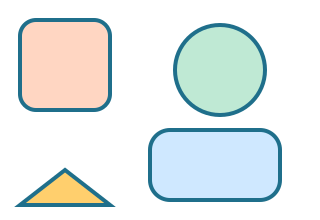

מה לומדים?
- נקודה מסמנת מקום קטן ומדויק.
- קו ישר, קו שבור וקו עקום.
- משולש, ריבוע, מלבן ועיגול.
דוגמאות קצרות
מצאו בבית שלושה חפצים בצורת ריבוע ושלושה חפצים בצורת עיגול.
משימה ידנית
שרטטו בעזרת סרגל קו ישר באורך 10 ס"מ, ואז הפכו אותו לריבוע.
נכיר את אבני הבניין של כל ציור גיאומטרי.

מצאו בבית שלושה חפצים בצורת ריבוע ושלושה חפצים בצורת עיגול.
שרטטו בעזרת סרגל קו ישר באורך 10 ס"מ, ואז הפכו אותו לריבוע.